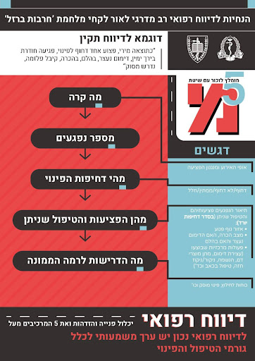

מיד מתחילים...
מיד מתחילים...
מיד מתחילים...
מיד מתחילים...
המענה הפיקודי הינו מסמך שנועד להבהיר ולפרט דרכי פעולה על פי פקודות הצבא לפיקוד הזוטר (מרמת מ"כ עד מ"פ כולל), וכן את הכלים הפיקודיים העומדים לרשותם לשם הכשרתו של החייל והבטחת המשמעת ביחידה.


יש לאפשר לחיילים להתקשר לפחות פעמיים בשבוע.
זהו זמן לקנות דברים בשק"ם והוא יינתן לפחות פעמיים בשבוע, חוץ מבסדנת שטח אשר בה ינתן שק"ם פעם אחת בשבוע (אין לתת לחייל זמן קניות במרכז כתחליף לזמן שק"ם).
בכל היעדרות מלו"ז ללא אישור מפקדים בין בבסיס או מחוצה לו, חייל נחשב כנפקד. כאשר חייל נפקד הוא אינו זכאי לטיפול ולזכויותיו כחייל (טיפול רפואי, ת"ש וכד'). לאחר 48 שעות החייל יפסיק לקבל משכורת. לאחר 21 יום חייל נפקד יחשב לעריק והדבר עלול להירשם לו כעבירה פלילית.
כל חייל זכאי לשלוש ארוחות עיקריות ביום, מתוכן ארוחה אחת חמה. בנוסף ישנן 2 ארוחות ביניים (פריסות) במהלך היום, ועוד 1 שמתחברת לט"ש. (במידה והזמן בין הארוחות קצר מ4 שעות רשאי מ"פ לבטל את ארוחת הביניים).
יש לחייב את החיילים לרחוץ ידיים לפני כל ארוחה.חל איסור למנוע מחיילים מלשוחח עם גורמים בבסיס. כמו כן, חל איסור למנוע מחיילים מלשוחח בינם לבין עצמם בחדר אוכל, שק"ם או כל מקום ציבורי בו אינם חלק משיעור או אימון.
| התפילה | זמני התפילה | משך התפילה |
| שחרית |
בין שעות זריחת השמש עד לשעה 9:00 אך בכל מקרה לפני כל פעילות |
יום חול: 40 דקות שני וחמישי: 50 דקות ראש חודש: שעה |
| מנחה |
בהתאם להוראת רב היחידה- עד שקיעת החמה. |
15 דקות
|
| ערבית |
מחצי שעה אחרי שקיעת החמה עד 23:30. |
15 דקות |
באחריות המפקדים לבצע ביקורת הופעת החיילים בטרם עזיבתם את הבסיס.
לפני כל יציאה יש לתדרך את החיילים בנושאים הבאים:
תגובה פיקודית היא חלק מתהליך חינוכי שנועד להקנות לחייל הרגלי משמעת ולעצב את התנהגותו בהתאם לנורמות ולערכים
דרכי פעולה:
תגובות אפשריות (חיוביות ושליליות) אשר בסמכות המפקד/ת לתת לפקודים:
| תגמול אפשרי (תגובה חיובית) | תגובה פיקודית (שלילית) |
| פרגון לחייל/ת על התנהגות טובה | הערה לחייל/ת תוך הזמנתו/ה לשיחה בפני המפקד עצמו או מפקד בכיר ממנו |
| צל"ש של החייל בפני היחידה באופן מילולי/ פרסום בפקודות השגרה | קיום שיחה יחידתית בה יצביע המפקד על הפסול שבמעשה, והכול תוך שמירה על כבוד החייל המעורב |
| קידום לתפקיד מעניין / בעל אתגר לחייל שביצועיו היו ראויים לציון לטובה | שלילת משימה מעניינת / אי הטלתה מלכתחילה |
| שעת ט"ש מוקדמת או תוספת לשעת ט"ש, הפסקה ארוכה יותר | נתינת זמן הפסקה בדיוק לפי הזכויות ולא יותר מזה |
| חופשת "אפטר" | מניעת "אפטר" או שלילת חופשה |
| יציאה מוקדמת לחופשה | שעות ביציאה |
מפקד מוסמך להטיל תרגול נוסף על כל חייל הכפוף לו בשרשרת הפיקוד.
מטרת התרגול הנוסף היא הקניית הידע והמיומנות לביצוע משימות ופיתוח תכונות ציות, דייקנות
ומשמעת על מנת ליצור רף ביצוע גבוה.
"שילובו הנכון של החייל בשירות הצבאי, מתחיל בראש ובראשונה ביכולת שלנו, המפקדים, להבהיר לו את גודל השעה, לרתום אותו למשימה ולוודא שאנו נוהגים בו באופן ראוי ומכובד...""
~מתוך מסמך תפיסת הטירונות
1. יש לוודא כי קיים ציוד תירגול מספק עבור כל דרג בנפרד.
2. את תכני האימון נדרש לתאם למול נציג הרפואה בבסיס האימונים הפיקודי הרלוונטי, ציוד רפואי הינו באחריות יחידה אורגנית בסדיר ובמילואים.
יש לוודא כי הריענון מקבל ביטוי בלו"ז האימון הפלוגתי/גדודי ומועבר על ידי מדריכים המוכשרים לכך.
בניית תוכנית אימון מותאמת לדרג החובשים המחלקתיים והפלוגתיים.
נוכחות כלל בעלי התפקידים, השפעה על תכני האימונים בתכנון המקדים, מיקוד בעבודת צוות ובניית אורגניות.
לרינגוסקופ, טובוסים, תרופות, אמבו, סקשן, ערכת טרוקר, ערכת קוניוטומיה, קמנומטר משולב.
יתר פרטי הציוד, כולל מיכלי חמצן – ייבדקו אחת לשבוע . המים במיכלי המים יוחלפו אחת לחודש.
מיגון קרמי אינו בהכרח טוב יותר, כי הוא מתאים בעיקר למתאר ירי, ואילו שכפ״צ נותן מענה הרבה יותר טוב למתאר רסיסים, שהינו שכיח יותר.
יש להכיר את הנחיות הגזרתיות והחשיבות בחבירה לכוחות הגזרתיים לדיוק המיגון למתארים שונים (כגון הפס״ד)

CAT
Firs Care

נקודות לחיצה
Combat Gauze
פרוטוקול RDCRקטטר פולי 26F

הקדמת חזרת חייל מחופשה לצורך תחקור עבירה / קיום הליך משמעתי תבוצע באישור מפקד בדרגת סא"ל.
מניעת חופשה ללא משפט תהיה מוגבלת ע"פ המפורט בטבלה:
| עונש (ללא משפט) | סמכות |
| מניעת חופשה עד 3 ימים | מפקד בדרגת סרן / קצין במינוי מ"פ |
| מניעת חופשה עד 5 ימים | מפקד בדרגת רב סרן |
| מניעת חופשה למשך עד 7 ימים | מפקד בדרגת סגן אלוף |
חודד פרוטוקול הטיפול בכאב לפצוע עם כאב בלתי נסבל הכולל אקטיק כקו ראשון ובמידה ואינו מגיב לאקטיק, או שיש לו גישה למחזור הדם בשלב מוקדם בטיפול, תרופת הבחירה היא קטמין במינון אנלגטי (25 מ"ג). מורפין הינו קו שני במקרה שטיפול באקטיק ו/או קטמין אינו נותן הקלה מספקת.
פרוטוקול PDF| סדיר | מילואים | |
| לוחם - מציל חיים | 1.תירגול באמצעות גורמי הרפואה אחת לחודש
2.יבצע ריענון אחת לחציון - הנחת ח"ע CAT על גדם- על גפה חשופה ולא על מדים/בגד |
לפני תעסוקה מבצעית (במסגרת אל"ת/אל"ל) |
| חובש/לור"מ | 1. אימון חו"פ אחת לחציון + אימון מס"ר 1 לשנה
2. 1 לחודש הנחת ח"ע CAT על גבי גדם כאשר בכל תירגול יבצע החובש 3 הנחות |
1. אימון חו"פ באל"ת/אל"ל
2. הנחת ח"ע CAT בכל שמ"פ |
| מטפל בכיר | פראמדיק - 4 משמרות כשירות בחודש
רופא - 25 ימי כשירות בשנה בבתי חולים על פי הגדרת ענף רפמ"צ |
פראמדיק - ביצוע 4 משמרות מד"א ב-3 שנים האחרונות. |
את האימונים במהלך התעסוקה נדרש לתאם מול הרפואה המרחבית.
זאב - כלי\רכב ממוגן
פורדבולנס
ספרינטר
דגשים להכנה לפינוי, אופציות חבירה והנחתה

במהלך הלחימה, בוצעה סכמת יהלו"ם בנפגעי תגובת קרב בצורה טובה, דבר המאפשר את רציפות הלחימה והקל על מצב הפצועים תוך צמצום סיכוי להתפתחות PTSD - יש להדגיש את חשיבות סכמת היהלו"ם, לתרגל את הסכמה בכל טיפול בנפגע חרדה ולוודא את הבנת חשיבותה.
סירטון מגן ללוחםבכל נפגע תגובת קרב יש לשלול פציעות פיזיות בטרם הגדרתו כנפגע תגובת קרב.
הסבר על חשיבות שיחות משאבים לאחר אירוע.